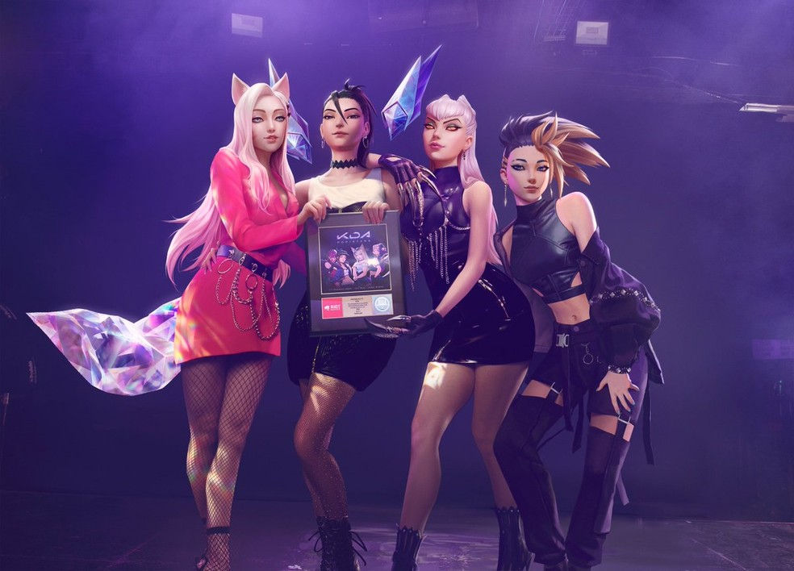

K/DA
K/da
Kris Di Angelis, mais conhecido por seu nome artístico KDA, é um produtor musical de house music e DJ de Londres. Ele ficou conhecido por ter lançado "Rumble", que foi lançada pela primeira vez através da Ministry of Sound, sendo posteriormente retrabalhada com vocais de Tinie Tempah e Katy B e renomeada "Turn the Music Louder (Rumble)".

K/DA é um grupo feminino virtual de K-pop que consiste em quatro versões das personagens de League of Legends, Ahri, Akali, Evelynn e Kai'Sa.
Conquistas
- A banda virtual de k-pop K/DA, de League of Legends, recebeu a certificação de ouro da Associação Americana da Indústria de Gravação (RIAA, em inglês) pelo single "POP/STARS". Lançada em 2018, a música interpretada pelas campeãs Ahri, Akali, Evelynn e Kai'Sa obteve a condecoração após atingir a marca de mais de 500 mil downloads únicos – número necessário para garantir tal premiação. A conquista foi celebrada nos perfis da Riot Games Music.
- o videoclipe da canção surpreendeu ao chegar a 13 milhões de visualizações no YouTube em menos de 48 horas. Atualmente, o vídeo conta com mais de 453 milhões de visualizações, sendo o mais assistido no canal do League of Legends na plataforma.
